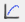

Session 1. DAWN Training - Data Browsing
This is the first in a series of training sessions to use the DAWN software suite. The aims of this tutorial are :
-
to become familiar with the main DAWN workbench
-
learn what perspectives, editors and views are, and how they can be opened, closed, found and customized
-
use the two data viewing perspectives Data Browsing and DExplore to open files and view data
-
investigate the different methods of viewing multidimensional data
-
perform basic modification of the plotted data, e.g. change the colormap and contrast/brightness of an image or change the axis of a plot to be log....
1. Running DAWN
Diamond Linux Workstations
On a Linux workstation within Diamond, type:
[user@workstation ~]$ module load dawn
Loading 64-bit Oracle instantclient, version 11.2
Loading 64-bit python, version 2.7.2
Loading 64-bit numpy, version 1.6.1
Loading 64-bit scipy, version 0.10.0
Loading the DLS compute cluster environment. Please report any issues to linux.manager@diamond.ac.uk
*****************************************************************
** DAWN (Data Analysis WorkbeNch) module loaded **
*****************************************************************
To start the application, type "dawn &"
For further options, type "dawn --help"
****************************************************************
[user@workstation ~]$ dawn &Anywhere else...
Dawn does not need to be installed, it just needs to be unzipped and run.
Go to: http://www.dawnsci.org/ and head to the download section. Versions for Linux and Windows, x32 and x64 are available. A version for Mac is also available but not supported.
The download is a zip file containing Dawn. Extract the contents of the zip file to a sensible location (for example C:\Dawn). The executable file for Dawn can be found in the extracted folder (DawnDiamond-version number).
-
Start DAWN.
2. The Welcome Screen
The first time DAWN is started it opens with the welcome screen showing (if this is not the first time DAWN has started, it will start in the same configuration it was closed in, if this is the case, follow the next set of instructions to return to the welcome screen):
When using DAWN you can return to the welcome screen at any time by pressing the home button.
The two important features of the Welcome screen are:
-
The System Check - the black panel at the bottom which shows if your computer meets the required specifications to run DAWN (green is good, yellow OK, red means some aspects may suffer)
-
The Tools panel
-
Click on the tools panel now.
This should bring up a list of all the data analysis tools available in DAWN.
The tools this set of tutorials cover are:
-
Data Browsing
-
DExplore
-
Workflows
-
Python
Exercise 1. Click an icon to open one of the tools, then find the home button in the toolbar and click to return to the welcome screen. Click the tools panel to return to the list of tools.
3. Browsing Data
The goal of the first in this series of training sheets is to use the two generic data viewing tools (Data Browsing and DExplore) to visualize different types of data (images, surfaces, traces...) from different types of files (Nexus/hdf5, tiff, img....) and become comfortable with using and changing the versatile interface DAWN provides.
-
Click on the icon for the Data Browsing tool
You will be greeted with a largely blank screen with lots of empty tabs, don't worry about that for now.
Opening A File
Find the Project Explorer tab on the left hand side of the screen (it should be the only one that isn't blank).
-
Expand the data folder to located the example data, double click on the file pow_M99S5_1_0001.cbf (if you do not have this file you may be running with example data from an older version of DAWN. See Appendix I to find out how to get up-to-date example data).
This opens the powder diffraction image for display.
The Project Explorer is like a favorites page for your data, you can link to folders of data on your local computer to this tab without making duplicates of the data.
Make a new data project
-
Go to File -> New..., Project... in the Select Wizard dialog, go to the Data folder and select Data Project
-
Call the project MyData and select a folder containing your data by browsing for the data directory (data can be provided if you don't have your own)
MyData should now be displayed in the Project Explorer
Data can also be opened directly from the file system using the File Navigator tab, or by dragging and dropping directly from a file explorer
Exercise 2. Use the File Navigator to open some data.
Exercise 3. Open some data by directly dragging it into the DAWN plot
Exercise 4. Add a folder to the Data Project by dragging the folder and dropping it in with the example data (choose to link rather than copy)
Editors and views - Plot/Text/Data/Tree
Now lets return to the diffraction image we have displayed.
On double-clicking the file some new tabs appeared and many of the previously blank views now show information. Before we dive in to opening and viewing different types of data lets take a minute to discuss some nomenclature that should make the rest of the tutorial more understandable.
Perspectives
The Data Browsing tool you are currently looking at (and all the other tools mentioned, like DExplore, Workflows....) are technically called Perspectives. In DAWN, a perspective is simply a collection of different tab views designed to help perform a certain task, be it to view and image, or write a python script. Many of these views appear in multiple perspectives and if you see a view in one perspective that looks the same as in another, there is a good chance they will work the same way.
The Editor
Most perspectives show an editor tab, one for each file open. The editor is the tab view that appears when you open a file (it has the name of the file at the top of the tab). DAWN has different editors for images, nexus files, dat files, python scripts... many different things. You don't need to worry about which editor you are looking at, DAWN automatically chooses the best editor for the type of file you want to open. (The name "Editor" is a bit odd considering the data files you open cannot be edited. When python source code or a workflow moml file is opened, on the other hand, these also appear in an editor and can be edited).
Views
Pretty much everything that is not an editor is a view. You can identify a view by the name it shows at the top of its tab.
Exercise 5. Locate the Editor and the Meta data, Value, Progress, and Console views in the Data Browsing perspectives, click on the tab to see what each view contains (most will be empty at this stage)
-
Return to the example data project, open MoKedge_1_15.dat
See how a new editor has appeared containing a blank plot and the Meta data view has changed to the Data view. The Data view contains a list of every data set found in the .dat file.
Take another look at the editor. You should notices some tab pages at the bottom which say Plot, Text, Data and Info. Switch between these tabs to see what they show.
Dat File Editor
-
Plot - shows the currently plotted data (empty if no data selected)
-
Text - a .dat file is just a text file, this tab shows the raw text of the file
-
Data - shows the data which has been selected to plot (or just a warning if no data is selected)
-
Info - shows the name, minimum and maximum values and the type of data each data set holds.
-
Switch to the plot tab in the Editor then select the Energy and In(i0/it) data sets from the Data view.
You should see a single trace plotted, as shown above.
-
What does the data tab in the editor show now?
Nexus File Editor
-
In the example data, open I22-4996.nxs, what tabs does the editor contain now?
Nexus files (and HDF5 files) can contain many different data sets of different types, shapes and sizes. The files are often shown as a tree, with different nodes containing different data or metadata information.
-
In the Tree tab of the editor expand the nodes of the tree looking for data, how do the names of the data sets you find compare to those shown in the Data view?
-
In the Data view, select Rapid2d/data. What shape is this data set? What does the plot in the editor show? How has the Data view changed? What does the Value view show?
The Rapid2D/data data set has 4 dimensions [1,1,512,512]. Since two of these dimensions are 1 the data set is shown as a 2D image, which in this case is what we expect to see. Just because a data set is 2D (or greater) does not mean it is an image, what if we wanted to view this data as a trace?
-
In the data view, select Slice as line plot  . What happens to the plot? Move the sliders in the slice table, how does the plot change? What happens when you use the arrow keys, page up/page down, home/end when the slider is selected?
Exercise 6. Change the plotting method using the actions in the Data view , then return to showing the 2D image.
Exercise 7. In the example data, go to the saxs folder and open more .nxs files and view the data inside. This folder contains nxs and h5 files, what do they each contain? Look at the size of the files, where does the data live? Where does the metadata live?
Customizing Perspectives
After using Dawn for a while, the screen can get quite busy. Its very easy to have lots of views open making it difficult to see the wood for the trees.
The user interface in DAWN is highly customizable. Any views you are not using can be closed or hidden. Important views can be maximized. Views you need can be opened, even if they are not part of the perspective. If you want a view to be part of a perspective you can make your own custom perspective with the view added.
-
Double click on the top of the editor tab to maximize it, double click again to return it to normal. Do the same with other views.
-
Drag the Value tab to be over the data tab. Close all the tabs that were under the Value tab. What happens to the editor?
-
Right click on the Value tab, select Fast View, what happens? Where does the view go? How do you undo it?
-
Right click again on the Value tab, select Detach, what happens?
Hopefully by now you should have made a horrible mess of the perspective. If not, try harder.
-
Reset the perspective, by right clicking on the perspective toolbar and choosing Reset.
Exercise 8. Close the Console view. Bring it back using the Window menu instead of reseting the perspective .
If you find you are using a particular set of views in a perspective you can save that arrangement as your own bespoke perspective so it always resets to have your most used views where you expect them.
4. The Plot - Basics
-
Close all the open editors (can you do this without having to click the cross on each one?) and reopenpow_M99S5_1_0001.cbf
When DAWN opens and image it automatically displays a default plot and automatically adjusts the contrast/brightness of the image. The plot can be customized by using the settings action.
-
Open the settings window, change the title of the plot, adjust the histogram type, how does the image change?
Navigating the plot
The above toolbar actions can be used to zoom and pan around the image.
-
Use these actions to zoom in and pan around the image, what does rolling the mouse wheel when the cursor is over the plot do?
Image tool bar actions
-
Can you find the action to turn on/off keeping the image aspect ratio? What about to make the image full screen (press esc to return from full screen view)
The view menu - Colormaps
There are more options for adjusting the image in the view menu
-
Find the color section of the view menu and select a different colormap. Play with the histogram type with different color maps to see how they change the way image looks.
Trace tool bar actions
-
In the example data, open MoKedge_1_15.dat and plot ln(It/Iref) vs Energy, what do these two plot tool bar actions do .
-
How can you perform a similar action by right clicking in the data view?
-
Change the trace color from blue to red and the plot title to "My Data".
-
Remove, then re-add the legend to the plot.
-
Change the y-axis to be log(y).
5. DExplore
On a basic level DExplore does most of the things the Data Browsing perspective does. Differences include:
-
The plot is shown in a view (Dataset Plot) rather than in the editor
-
Data sets are selected from the editor rather than the Data view (the Data view is not used in DExplore)
-
DExplore has a different way of selecting the data sets and how they are displayed (using the data set inspector)
-
Switch to the DExplore perspective by either returning to the Welcome screen or using the Open Perspective action on the Perspectives toolbar or by using the Window menu.
Exercise 8. Open some of the data files used previously in this tutorial in DExplore. Plot different data sets, in different ways, and do some slicing.
There are some fundamental differences between the way the Data Browsing perspective and DExplore work. As time goes by and you learn to do more advanced things in DAWN the differences become more obvious. For basic data viewing either perspective should work fine.
6. Help and Cheatsheets
Exercise 9. Close DAWN and start it again, do you see the Welcome screen?
Congratulations you have made it to the end of the first tutorial, if you would like to learn more (without jumping ahead to the next tutorial), feel free to browse the help menu contents or look at the cheat sheet sections(Help-> Cheatsheets...) for more training on how to use DAWN.
Also don't miss the DAWN science YouTube Channel for video guides on using DAWN: http://www.youtube.com/user/DAWNScience
7. Feedback (optional)
The help menu in DAWN has a feedback form so you can alert us if DAWN crashes or behaves in an unexpected way.
If you like, send us a feedback (Title the summary DAWN TRAINING), telling us how you found the training worksheets (were they clear? Too much/Too little information?). Feel free to tell us what kind of data you are interested in (images/traces/both) and what visualization and analysis tool you like/dislike and what you feel is missing.
Test Yourself
-
Where do you get dawn on (a) A Diamond Linux workstation, (b) A windows PC
-
What is the icon for the "Show Welcome Screen" toolbar action?
-
Describe one way of adding a folder to the project explorer.
-
What is a perspective?
-
What is the difference between an editor and a view?
-
What tabs would you find in a nexus editor that you wouldn't find in a dat file editor?
-
What happens when you make a view a Fast View?
-
How do you reset a perspective and what does it do?
-
Name one colormap.
-
What is the Icon for panning in a plot?
-
Where can you change the color of a trace?
Appendix I - Refreshing Example Data
If you have no extra data or links to folders in your current example data, delete the folder (and remove project content from disk).
-
Go to File -> New..., Project... in the Select Wizard dialog, go to the Data Browsing folder and select Data Project
-
Call the give the project a name and check "Create example data"
-
Your project view should now have an example data folder